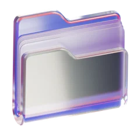

Stripe€190,000 / year
Spotify€165,000 / year
 Linear€210,000 / year
Linear€210,000 / yearTau team · 20 Oct 2026 · 12 min read
A job search operating system for Claude. 18 standalone skills across six stages: position yourself, find the roles, apply, reach the people hiring, interview and negotiate the offer.
18 standalone Claude skills for the job search, grouped into six practical stages. Each skill is a small, uploadable workflow that teaches Claude how to do one high-value job search task the same way every time — with a method, not a one-off prompt.
Together, they work like an operating system for the whole search: decide what you’re selling, find the right roles first, make every application fit, reach the person who’s hiring, prepare for the interview and negotiate the offer. They’re built for designers, engineers, analysts, PMs and anyone who wants Claude to behave less like a chatbot and more like a sharp career coach: specific before generic, evidence-based before flattering, and ready to send before polished.
Each skill is one folder with a single SKILL.md file. Add it in Claude’s Skills settings, then name the skill in your prompt — or just describe the task, and Claude picks the right skill on its own.
Tau finds roles on LinkedIn, tailors your CV and applies for you
Start for freeThe pack is grouped into six stages. They run in the order a real job search does — position first, negotiate last — but every skill is also useful on its own. Most people start with one stage, the one that’s hurting right now.
Use these before you send a single application. Most searches stall because the target is too wide, not because the CV is weak. So these skills fix the target first: a clear role, the market’s words for it, and a profile a recruiter can place in five seconds.
Career Audit reads your CV and past work and returns the honest baseline: the roles you’re strongest for, ranked, with evidence for each. Target Role Finder translates your current title into the three to five titles recruiters actually type into search. LinkedIn Profile Rewrite turns both into a new headline, an About section and three experience bullets built around those searches. Specific, evidence-led and readable in one scroll.
Use these when the jobs tab is eating your evenings. Fresh roles first, hidden roles second, and a hard filter on which ones are worth your time.
Role Scan checks new postings every hour against your filters and returns a ranked shortlist, so you see a role the morning it goes live, not the week after. Hiring Post Finder searches the feed for “we’re hiring” posts from people in your field: the roles that never reach a job board. Fit Score rates every role from 1 to 5 across fit, level, pay and red flags, so you apply to the ten that matter instead of the fifty that don’t.
Use these once you’ve picked a role. Every application should read like it was written for that job, because it was. The rule is simple: the posting’s language, your real experience, nothing invented.
CV Tailor rewrites your CV around the role’s keywords and returns a clean PDF that clears the ATS and survives the six-second skim. Cover Letter writes three short paragraphs that open with the company, not with you, in under ten minutes. Application Answers drafts the open questions on long forms in your voice, ready to paste and edit.
Use these when applying alone isn’t enough. A message to the right person moves an application from the pile to a conversation, as long as it’s short, specific and sent at the right time.
Hiring Manager Finder identifies who owns the role: the hiring manager, the recruiter and one peer worth contacting. Outreach Message writes a three-sentence note under 300 characters that talks about their team, not your CV. Follow-up tells you when to chase and writes the follow-up: polite, short and easy to answer.
Use these once a recruiter replies. Preparation beats talent in most interview loops, and these skills make preparation repeatable: research first, stories second, practice last.
Interview Prep builds a one-page brief on the company, the role, the interviewers and the questions you’re most likely to get. Story Bank turns your experience into six STAR stories and maps each one to the behavioural questions it answers. Mock Interview runs a live practice round and gives feedback after every answer: structure, length, evidence and the one thing to fix.
Use these when an offer is close. The first number is rarely the best one, and the people who ask for more usually get some of it.
Salary Research builds a realistic range for the role, level and city, with sources and a target number you can defend. Negotiation Script writes the call script and the counter email, with fallbacks for every likely answer. Offer Comparison puts competing offers side by side, across pay, growth, risk and fit, and ends with a clear recommendation.
Stages 1 and 2 sharpen what you’re aiming for and where to find it. Stages 3 and 4 turn a role into an application a human actually reads. Stages 5 and 6 get you through the interview and to the best possible offer.
Linear€210,000 / yearDownload the pack and unzip it so each skill stays in its own folder with its SKILL.md file. In Claude, open your profile menu and select Settings.
In Settings, select Skills. Open Add and choose Upload a skill.
Open one skill folder and drag its SKILL.md into the upload window. Repeat for each skill you want — you don’t need all 18 on day one.

Drop SKILL.md herecv-tailor / SKILL.mdGo back to the Skills list and make sure the skill appears. Select its name to open it.
Read the skill’s name, description and instructions, then make sure its switch is on. That’s it — Claude will use it whenever your request matches.
Tell Claude which skill to use and give it the relevant files or context — your CV, the job post, the recruiter’s message. Review every output before you send it.
Skip the guesswork. Each skill maps to one specific need, so find the row that matches where you’re stuck and use that skill.
| Your need | Skill to use |
|---|---|
| A clear target before applying | Career Audit |
| The words recruiters search for | Target Role Finder |
| More recruiter messages | LinkedIn Profile Rewrite |
| New roles within the hour | Role Scan |
| Roles that never get posted | Hiring Post Finder |
| Only apply where it’s worth it | Fit Score |
| Get past the ATS | CV Tailor |
| A letter in ten minutes | Cover Letter |
| Answers for long application forms | Application Answers |
| Know who owns the role | Hiring Manager Finder |
| A message that gets a reply | Outreach Message |
| Chase without being annoying | Follow-up |
| Prepare for Thursday’s interview | Interview Prep |
| Stories for behavioural questions | Story Bank |
| Practise out loud | Mock Interview |
| Know what the role pays | Salary Research |
| Ask for more money | Negotiation Script |
| Choose between two offers | Offer Comparison |
Not sure where you’re stuck? Start with Career Audit and Fit Score. Most job searches stall because the target is too wide, not because the CV is too weak.
Every skill pushes Claude toward output that a good recruiter or career coach would sign off on before it leaves your hands.
A Claude skill is a reusable instruction file that teaches Claude one method and the standard its output has to meet. A job search skill encodes one piece of the craft — tailoring a CV, scoring a role, writing outreach — so it runs the same way every time instead of being re-explained in a new prompt.
Eighteen, across six stages: positioning, search, applications, outreach, interviews and offers. They’re built to be used one at a time, and each names the output it produces.
Skills work on Claude’s paid and free plans where skills are available. Each skill is plain Markdown, so you can also paste one into a chat as an instruction — you lose the automatic pick-up but keep the method.
Unzip the pack and add each SKILL.md in Claude under Settings → Skills. Claude then uses the skill on its own whenever your request matches what it’s for.
Career Audit, then Fit Score. A sharp target and a short list of roles worth your time beat a perfect CV sent to the wrong jobs.
No — the skills draft; you send. If you want the whole loop to run every day — finding roles, tailoring, applying and booking interviews — launch the Tau agent on LinkedIn.
Free trial · Live in 5 minutes · Cancel anytime